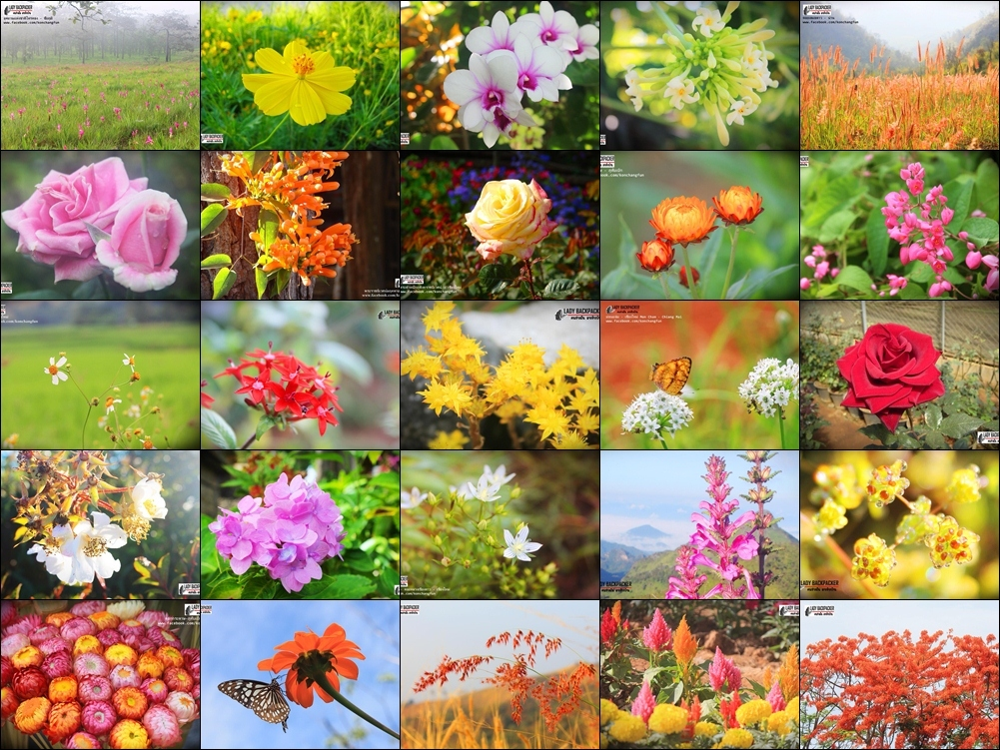

Sakura
Hydrangea
Sunflower
Tulip
Daisy
Camellia
Flowers; a lovely reminder of how beautiful change can be.
ประวัติของดอกไม้
ดอกไม้ คือโครงสร้างการขยายพันธุ์ของพืชดอก (Magnoliophyta หรือ angiosperm)
การทำงานเชิงชีววิทยาของดอกไม้มักจะเป็นการขยายพันธุ์ด้วยกลไกแบบสเปิร์มกับไข่
การปฏิสนธิของดอกไม้สามารถเกิดได้ข้ามดอก (การรวมตัวของสเปิร์มและไข่ที่มาจากดอกอื่นหรือต้นอื่นในกลุ่มประชากร)
หรือเกิดในตัวเองก็ได้ (การรวมตัวของสเปิร์มและไข่ในดอกเดียวกันนั้น)
ดอกไม้บางชนิดผลิตส่วนแพร่พันธุ์ (diaspore) โดยไม่ต้องมีการปฏิสนธิ (การเกิดผลลม)
ดอกไม้จะมีอับสปอร์ (sporangia) เป็นแหล่งสร้างแกมีโทไฟต์
ดอกไม้คือส่วนที่เกิดเป็นผลไม้และเมล็ด ดอกไม้หลายชนิดวิวัฒนาการตัวเองเพื่อดึงดูดสัตว์
เช่นแมลงเพื่อให้เป็นตัวช่วยส่งถ่ายละอองเรณู

ดอกไม้ ถือเป็นสัญญาลักษณ์สำคัญ หรือเป็นตัวแทนของคำพูด
ที่ผู้มอบต้องการที่จะสื่อสารกับคนรับ ดอกไม้
ยังถูกนำมาเป็นตัวแทนในหลายโอกาส อย่างเช่น แสดงความยินดี แสดงออกทางความรัก ความเสียใจ การบูชากราบไหว้
ใช้ประดับ รวมไปถึงเป็นตัวแทนของดอกไม้ประจำประเทศ ดอกไม้ประจำตัวของพระราชาราชวงค์ต่าง ๆ
ดอกไม้ นอกจากจะมีความงามสดใสเฉพาะตัวแล้ว ยังมีกลิ่นที่หอมชื่นใจอีกด้วย
ด้วยสีสันที่หลากหลายมนุษย์เรายังจำแนกสีของดอกไม้ออกไปได้หลายตามอารมณ์ ความรู้สึก การนิยามถึงบุคคลนั้น ๆ
ได้อีกด้วย ในชีวิตประจำวันคนเรายังนำเอาดอกไม้มาใช้ในโอกาสต่าง ๆ อย่างเช่น แสดงความยินดี การกราบไว้บูชา
รวมไปถึงการตะหนักรู้ทันหากใช้อย่างถูกวิธี การดูแลรักษาสืบพันธุ์ของพืชดอกเพื่อมีใช้หมุนเวียนต่อไปในอนาคต
ดอกไม้ นอกจากจะส่งกลิ่นหอมเป็นเอกลักษณ์เฉพาะตัว ทั้งยังสามารถนำไปใช้มอบแทนคำพูดในหลายโอกาสแล้ว
สีของดอกไม้ยังสามารถบอกถึงอารมณ์ ความรู้สึก หรือตัวตนของบุคคลนั้นได้เป็นอย่างดี อาทิ สีแดง แสดงออกถึงความรัก
สีเหลือง สื่อถึง ความโชคดี ตัวแทนแห่งมิตภาพ ความปราถนาดี สีขาว สื่อถึง ความบริสุทธิ์สดใส ความอ่อนโยน
ความซื่อสัตย์ และแสดงความยินดี สีชมพู สื่อถึง ความรักที่สมหวัง ความรักที่กำลังเริ่มต้น และสีส้ม สื่อถึง
ความสดใสร่าเริง ความอบอุ่นน่ารัก